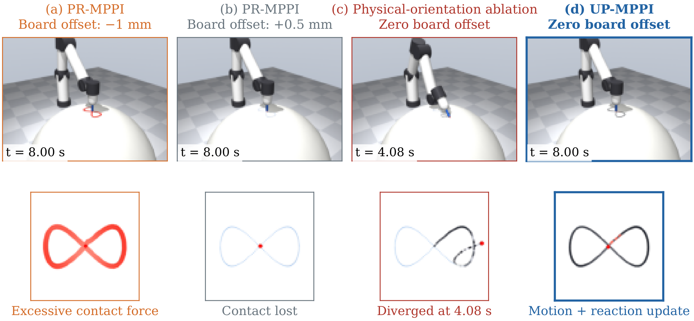
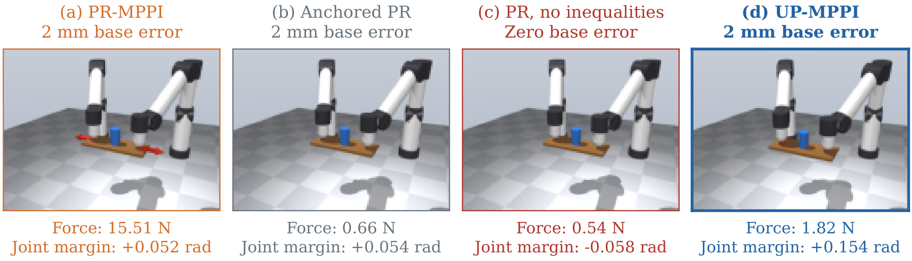
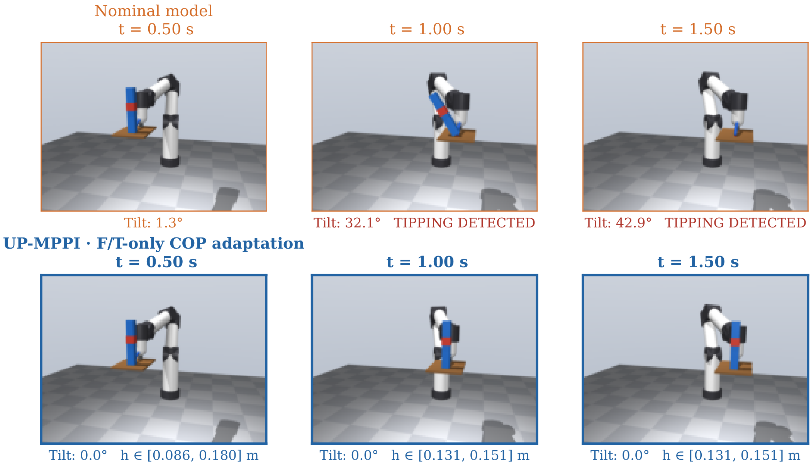

Physical contact creates a reaction.
A surface or a closed chain changes the realized motion and generates a wrench. Its geometry and reaction belong in the contact dynamics.
CONSTRAINED CONTROL · MODEL UNCERTAINTY
Plan with constraints.
Make safety margins explicit.
Adapt to an uncertain load.
In preparation for submission to
IEEE Transactions on Robotics
Keep the geometry.
Constrain the interaction.
Adapt the admissible set.
01 / THE CENTRAL IDEA
Some constraints are enforced by the environment. Others must be enforced by the controller. UP-MPPI makes that distinction explicit, then projects sampled inputs into a common admissible set.
A surface or a closed chain changes the realized motion and generates a wrench. Its geometry and reaction belong in the contact dynamics.
Pen orientation and tray levelness do not create physical reactions. They become explicit control constraints.
Robust projection enforces the constraints across an uncertainty set. Bounded-error measurements can shrink that set over time.
Projection and averaging generally do not commute. Samples clipped by different constraint faces can introduce an additional inward shift. The motion channel uses a raw mean and a final projection. The reaction channel averages projected reactions to preserve force regulation. Constraint tightening supplies an explicit execution margin where applied.
02 / SEE IT IN MOTION
From a pen on a curved surface to an uncertain load on a tray. Each simulation exposes a different consequence of how constraints are modeled.
The pen traces a figure-eight on a spherical board with a 2–4 N commanded reaction band and a desired orientation. The results distinguish commanded constraints from the force realized by the simulator.
UP-MPPI · mean over 3 seeds at zero board offset.
Top: PR with the modeled board 1 mm too low or 0.5 mm too high. Bottom left: an ablation that treats pen orientation as a physical contact constraint. Bottom right: UP-MPPI with raw motion and projected-reaction averaging. The ablation is distinct from the standard CAMP baseline.
Ink: black in band, red above 4 N, gray below 2 N.
Saved states compare excessive force, lost contact, the orientation-as-contact ablation, and UP-MPPI. Close-ups show the resulting ink traces.

Two arms carry one tray. Retracting to an incorrectly calibrated closed chain can turn a 2 mm base error into internal loading.
Mean internal-force norm at 2 mm base error. UP-MPPI: the displayed seed-0 replay.
Top: PR and anchored PR at 2 mm error. Bottom: PR without inequality projection at zero error, and UP-MPPI at 2 mm error. The red arrows visualize internal forces.
Anchored PR reaches 0.45 N in this setting; the methods make different geometry–force trade-offs.
The same final instant reveals how calibration and constraint handling change internal force and joint margin.

A nominal model underestimates the payload’s center-of-mass height. Robust constraints account for the full interval; measurements then reduce conservatism.
Main study · true CoM height 0.14 m · 5 seeds per method.
Top: nominal and robust control. Bottom: COP-difference adaptation using only F/T measurements, and an oracle with the true height. The adaptive method updates the height interval during the task.
All four use the raw update and final projection. The seed-0 replay illustrates the five-seed study below.
A matched timeline compares the nominal model with F/T-only adaptation. The estimated height interval appears below each adaptive frame.

03 / THE FRAMEWORK
Velocity-level geometry and acceleration-level contact dynamics share a projection framework. The structure determines when motion and reaction can be solved separately.
Separate physical contact from virtual constraints. Pull motion and wrench limits into the sampled input space, including uncertainty vertices and an execution-error margin where applicable.
Find the nearest feasible input in a suitable metric. Use a motion–reaction split when the separation conditions hold, or a joint projection for coupled constraints.
Use rollout weights for the raw motion mean and the mean projected reaction. Reconstruct the first command at the measured state with a final motion projection. Without a reaction channel, this reduces to the projected raw mean.
The inertia metric makes motion and reaction projections independent under the stated separation conditions. Torque limits or other coupled rows can require a joint solve.
Tightened rows transfer a command-level certificate to the realized wrench when the assumed execution-error bound holds. The current waiter study evaluates the period-averaged wrench; a pointwise claim requires a pointwise bound.
Velocity projection with an identity metric connects to PR-MPPI. Retraction handles virtual geometry; anchoring addresses the force sensitivity of uncertain physical constraints.
Inertia-weighted acceleration projection connects to CAMP-MPPI. Physical reactions follow constrained dynamics; virtual constraints remain controlled rows.
Vertex constraints apply to the manuscript’s multi-affine parameterization. Set-membership updates preserve true-parameter containment only with a valid prior and valid measurement-error bounds.
The executed command is projected into the current admissible set, which must be nonempty. Later raw averages are warm starts. Robustness requires true parameters inside the maintained set and valid measurement and execution-error bounds.
04 / SIMULATION EVIDENCE
Saved MuJoCo studies with explicit controller variants and seed counts. The updated waiter study isolates the averaging rule and the effect of online adaptation. All measurements below are simulated.
UP-MPPI vs. CAMP-MPPI at zero board offset.
See the comparison ↗ ADAPTATION · 5 SEEDS26%F/T-only adaptation vs. the robust prior on the second move, h = 0.14 m.
Explore the height sweep ↗ COMPUTATION · K = 102442%Separable vs. joint writing projection on the same RTX 4060.
Inspect the timing ↗Blue rows identify UP-MPPI. Bold values mark the best displayed results, including ties, among completed runs in each comparison. Red marks an exceeded bound or control period.
Raw motion averaging limits the inward shift from sample clipping; projected-reaction averaging retains force regulation. The inertia metric keeps these corrections separate under the stated structural conditions.
| Controller | Force in band ↑ | Path RMSE ↓ | Orientation RMSE ↓ |
|---|---|---|---|
| CAMP · orientation cost | 99.1% | 1.77 mm | 0.72° |
| Orientation-as-contact ablation | 42.1% | 20.99 mm | 25.54° |
| UP-MPPI · mixed update | 99.3% | 1.58 mm | 0.11° |
| Mixed update · identity metric | 16.8% | 1.87 mm | 0.18° |
| UP-MPPI · joint projection | 99.3% | 1.58 mm | 0.11° |
11.0% lower path RMSE
85.1% lower orientation RMSE
vs. CAMP · zero offset · 3-seed meansThe orientation-as-contact ablation diverged in 3/3 runs; its metrics cover the executed portion. UP-MPPI commands 2.12–3.39 N and its measured force stays in the requested 2–4 N band for 99.3% of the evaluation period. No execution-error tightening is used in writing, so measured force regulation is an empirical result. CAMP and UP-MPPI have similar measured forces here; the clearest improvements are in path and orientation. The joint and separable inertia-metric solvers agree to numerical precision on stored force traces.
Change the base offset to compare the completed three-seed sweep. Anchoring reduces calibration-induced forces; UP-MPPI additionally handles virtual rows, joint margins, and a modeled reaction box.
Mixed-update UP-MPPI with calibrated joint-margin tightening and a reaction box. Each plotted point is the mean of 3 seeds. Internal force is one measure of the geometry–force trade-off.
Hold the robust parameter interval and execution-error tightening fixed. Compare averaging projected samples with the raw average followed by a final projection.
lower tracking RMSE
with the same robust rows and explicit error margin
Both methods: 0/5 tipped runs. Execution-error bound ε = 0.165 m/s², calibrated on separate runs. This is an ablation of the update rule, not an external-method comparison.
Robust control prevents tipping in the main study. Set-membership adaptation reduces the tracking gap to an oracle that knows the true height.
of the robust-to-oracle tracking gap closed
by F/T-only COP-difference adaptation
At h = 0.14 m: nominal tipped in 5/5 runs; each plotted method tipped in 0/5. Nominal tracking is omitted because its runs terminated early.
Gap closed = (robust RMSE − adaptive RMSE) / (robust RMSE − oracle RMSE). These are saved development runs with empirically calibrated error bounds; the bounds are assumptions, not universal worst-case guarantees.
Compare task adaptations of safe-sampling methods and optimization-based planning. These results complement the matched ablations; they do not rank the original published implementations.
| Method | Move 1 ↓ | Move 2 ↓ | Tipped runs ↓ | Max. error (m/s²) |
|---|---|---|---|---|
| UP-MPPI | 39.2 mm | 41.2 mm | 0/5 | 0.063 |
| Shield adaptation | 53.6 mm | 49.5 mm | 0/5 | 0.055 |
| DualGuard adaptation | 110.2 mm | 237.7 mm | 0/5 | 0.257 |
| GS raw-mean adaptation | 39.3 mm | 41.4 mm | 0/5 | 0.059 |
| Offline robust plan | 27.7 mm | 26.7 mm | 0/1 | 0.109 |
| Online robust NMPC | 45.1 mm | 46.1 mm | 0/1 | 0.052 |
MPPI: 5 seeds per condition; optimization: 1 deterministic run. Settings minimize main-task move-1 RMSE among no-tip variants. The offline planner knows the full reference. Equal numerical margins do not ensure equal certificates: DualGuard’s observed error exceeds ε.
Shield adaptation. Barrier penalties and finite-difference repair of the first three inputs. Source paper ↗
DualGuard adaptation. Analytic joint braking sets with task-specific support and reaction backups; no full manipulator reachability computation. Source paper ↗
GS raw-mean adaptation. Soft-minimum input margins and Euclidean corrections. This implementation executes a filtered raw mean at the planning rate. The original selects the best sampled input and has a faster inner filter. Source paper ↗
Optimization. The offline comparator adapts robust plan-and-track control using joint accelerations, 50 ms knots, and soft support rows. Online NMPC has hard first-knot and soft future support rows, with additional jerk regularization. Plan-and-track source ↗
Additional outcomes: the one-step QP tracks writing at 1.00 mm with 100% force-band occupancy; an RLS estimate gives 27.2 mm second-move waiter RMSE. In dual-arm transport, Shield and DualGuard reach closer to the joint-space goal than UP-MPPI, but omit its tightening and reaction box. UP-MPPI does not dominate every comparator.
For equivalent inertia-metric writing projections, separation reduces planning time by 42% at K = 1024. Timing includes host processing and transfers.
| Planner | Whole plan ↓ | Rollout kernel ↓ | Control period |
|---|---|---|---|
| Writing · separable | 4.43 ms | 1.24 ms | 10 ms |
| Writing · joint | 7.64 ms | 2.82 ms | 10 ms |
| Waiter | 8.65 ms | 7.03 ms | 20 ms |
lower writing planning time
separable vs. joint projection on the same device
All three measurements at K = 1024 are below the corresponding simulated control period. This is not a worst-case deadline guarantee.
Smallest of three round medians, 50 plans per round after 10 warmups. Kernel timing is a separate synchronized pass. The workstation also ran CPU jobs. Online NMPC averages 436–465 ms per step on CPU in its trajectory runs; that protocol differs from this GPU benchmark.
Current evidence, current limits. These are simulation and computational results; hardware validation remains future work. Robustness depends on valid parameter and error bounds. The waiter certificate concerns period-averaged wrench constraints. Measured force-band occupancy and no-tip counts do not establish universal or pointwise guarantees.
05 / READ & EXPLORE
UP-MPPI is a research project in preparation for T-RO submission. These materials capture the current development stage.
Unified formulation, separate motion–reaction updates, explicit execution margins, and adaptive simulation studies.
Aggregated simulation metrics, source hashes, and notes identifying the variants in each film.
RELATED WORKContact-Aware Manifold Projection MPPI for Hard Dynamics-Level Contact-Wrench Constraints.
Paper: TBD. Public code release is planned.